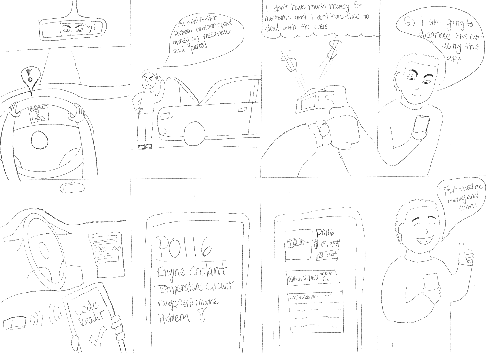

ISTE 264: Prototyping and Usability Testing - Group Project
Group Members
- Kelvin Ocampo-Diaz
- Isaac Prusky
- Charlie Cohen
- Jonathan Yau
Design Problem Analysis
The Problems
Accessibility of information - It's hard sometimes to know what is wrong Time - not everyone has the time to go to a mechanic When owning a car it's sometimes hard to know what is wrong with the car, in addition not everyone has the time to bring their car to the mechanic. Even if you do have time to bring your car to the mechanic it easily costs over hundreds of dollars even for simple problems that can be easily self-fixed.
The Solution
A device which plugs into the car diagnostic port, and transmits information to an app on your phone, making for easy and convenient access to useful information about your vehicle.
The Prototying Plan
The plan is to prototype an app that takes in all the information that would be given when the device is plugged into the car. The app translates all the information taken into an easily readable diagram that the user could understand. It would be in pictures in addition to captions describing the problems.
Potential Pain Points
- Possible misunderstanding of the information given
- Not knowing all the vocabulary given, for example car parts
- Might worsen a situation with the car by trying to fix by oneself
Personas
Name: Orange ApplebottomOccupation: Office Worker
About: As an office worker Orange usually drives his car to and from work and is his only way of transportation. Recently his car has been making some strange noises throughout his commute but he is too lazy to get it checked out since it doesn’t seem to be any major problem. He wants to know what the problem is but doesn’t want to go to the mechanic and pay hundreds of dollars to see what it is.
Name: Pearsons Khan
Occupation: CEO of Pear-khan Academy
About: As the CEO, Pearsons has a lot of free time and a lot of money to support his hobby of collecting, driving and tuning cars. He would hire some mechanics to manage his cars but he wants to start doing that on his own but doesn’t know where to start. 
Lo-Fi Prototype
Interactive Prototype
Below is an interactive prototype. You can pan, zoom, and interact with it from this page. If you would like to see it in greater detail you can use the button in the top right, and if you would like to visit the actual project you can click on the name as the bottom.Evaluation of Lo-Fi Prototype
Heuristic Questions for Evaluation
A number of subjects experinced our design after which they answered a series of Likert Scale questions based off of Jakob Nielsen's 10 Usability Heuristics. For each question the subjects were instructed to give a rating from 1 to 5 (1-Mostly disagree 2-Somewhat disagree 3-Neutral 4-Somewhat agree 5-Mostly agree).The questions were as follows:
#1: Visibility of system status
I usually know where I am at and don't get lost in the app.
#2: Match between system and the real world
The app are using conventions and terms I am familiar with and it feels natural to understand
#3: User control and freedom
I never feel trapped in a certain page of the app there's always an option to go back or exit
#4: Consistency and standards
The app seems conventional and seems to follow the same standards as other apps I've have used before
#5: Error prevention
There are no errors or there is an options to go back from the error or report it
#6: Recognition rather than recall
I don't have to remember much information to know how to use the app, most the things I need to do with the app is recognizable
#7: Flexibility and efficiency of use
Once you get used to the app there are shortcuts I can choose to take to get to where I want faster
#8: Aesthetic and minimalist design
Most the information I see in the screen are relevant information and there isn't any information overflow
#9: Help users recognize, diagnose, and recover from errors
I know what is going on when there is an error
#10: Help and documentation
I know what I am doing but when I don't there is usually information explaining what I would need to do to get what I want
Responses
Kelvin
Subject 1
1) 3 It is easy to access some pages, but there is a problem with the logo as “back.”2) 3 It seems that the app is for mechanics only, because they would know what to fix than the users.
3) 3 I have a problem with the recent diagnosis page, there is no back icon at the corner.
4) 4 There are some verison/systems from IOS and Android in the pages.
5) 5 N/A
6) 4 It is important to recall the dates/receipts when you made a purchase or order. There is a recent diagnostics page which is recognisable to me.
7) 3 It’s pretty smooth when you diagnose the problem, find the nearby store or order online and check out at the end.
8) 5 There are two similar pages when you acces “How to Fix” and “Resources,” both should be combined in one.
9) 4 If there is error with the reader, I need to access the setting page to reconnect a reader or new reader. I suggest adding technical support.
10) 2 There is a support on the dashboard page. I feel like there is not enough information for the part.
Subject 2
1) 4 The pages access to other pages seem decent.2) 3 Depending on the users how much they know about the car, it would be easy for them. It would be a little hard for normal users to understand the app.
3) 4 Most of the pages have options to leave the pages.
4) 3 This app seems standard and the dashboard is a simple page, but it’s visual with icons. The bottom navigation is not consistency when you make a purchase through pages.
5) 4 When there is error, always go to the settings page. There are device, support, and payment methods which would solve the problem.
6) 4 The dashboard is likely a main page and everything is icon in there are recognisable.
7) 3 There are a few shortcuts for going back to the main page, but other pages do not have shortcuts.
8) There are pretty much information through the processing of checkout page.
9) 3 Depending on the users, if the error is too complicated then they would not able to recover from it. For this app, it seems a bit simple which everyone can solve it.
10) 2 There are some pages with no information like “Diagnose Problems” button. Like do I need to click it anyways?
Jonathan
Subject 3
1) 4 the pages are generally self explanatory2) 3 there are some of car terms that I don't know but I assume that a car guy would know
3) 4 overall there are back buttons but for some pages I can only go one place and not back
4) 4 similar systems and buttons that I would see on other apps
5)N/A haven't encountered error
6)4 buttons are recognizable and not much information needed to remember to operate the app
7) N/A not really any shortcuts per se
8) 4 each screen does seem like there isn't any non-relevant information
9)N/A no errors encounterable
10) 4 everything is basically self explanatory
Subject 4
1) 4, you know where to go the tabs are self explanatory2) 5, easy to use not too hard
3) 5
4) 4 not too familiar with apps but seems very easy flowing and smooth to use
5) 4 wasn’t any errors encountered but it would seem that an error message would show up
6) 4 buttons are there, they are recognizable, maybe have a quick intro to describe how to work it
7) 4 tabs seems to help me move faster to places I want
8) 5 simple and have only relevant information
9) N/A no error encountered
10) 2 maybe include a tutorial to explain how to use app
Charlie
Subject 5
1) 3 The pages make sense but because the detail is very limited within the prototype it was hard to assess where I was on every screen.2) 3 The terms make sense with context of the app but I am not familiar with all of the terms.
3) 3 The pages work but given the constant switching of pages it becomes hard to understand where the back button will send me back to.
4) 4 The app seems to work similar to how other apps I use work.
5) 4 I did not encounter any errors but from an error prevention view would having something that appears if the reader lost connection or could not be connected might be beneficial.
6) 2 Some things are labeled with where you would assume an interaction would lead you but without the rest of the information I’m not sure where it leads.
7) 1 No shortcuts are easily recognizable.
8) 4 There is not an overflow of information and from what is available all information is relevant.
9) 5 No errors are encounterable
10) 3 Most of the app is explained however, there are a few screens in which there isn’t enough information to know what would happen just based on design alone. (Connect to Reader)
Subject 6
1) 4 I understand where I am after clicking the links to the associated pages. Should add a little more context to the icons at the bottom and explain the first screen as the subject was unable to understand what that was without explanation.2) 3 Unfamiliar with all terms but for the most part the app conventions make sense.
3) 4 The back buttons and options available are clear. Only problem is some links do not do anything which is confusing.
4) 4 The app is consistent across all screens and works like every other app I have used.
5) 5 No errors found.
6) 4 Buttons are recognizable based on text. Things I would need to know how to do would be more focused on the diagnostic reader.
7) 1 No shortcuts found.
8) 4 The design is minimalistic and all information is relevant on screen.
9) 5 No errors found. Would add some designs to show what an error could look like and what would be shown.
10) 4 Much of the app is easily understandable besides the card reader functionality and how to connect it to the app.
Isaac
Subject 7
1) 5 I usually know where I am at and don't get lost in the app.2) 4 The app are using conventions and terms I am familar with and it feels natural to undertsand
3) 5 I never feel trapped in a certain page of the app theres always an option to go back or exit
4) 5 The app seems conventional and seems to follow the same standards as other apps I've have used before
5) There are no errors or there is an options to go back from the error or report it
6) 5 I don't have to remember much information to know how to use the app, most the things I need to do with the app is recognizable
7) 5 Once you get used to the app there are shortcuts I can choose to take to get to where I want faster
8) 5 Most the information I see in the screen are relevant information and there isn't any information overflow
9) ? I can't really can't tell because I'm not actually filling it out
10) ? I know what I am doing but when I don't there is usually information explaining what I would need to do to get what I want, but it's hard to tell
Hi-Fi Prototype
Evaluation of Hi-Fi Prototype
Summary: Each member of the team found 2 people to test for the Hi-Fi prototype. Functionalities tested included:
- Animation smoothness and fluidity.
- App flow. Did it feel natural?
- Ease of use? Was the user able to get to where they wanted easily and with few pain points.
Scenario 1: Your car has been making more noise than the usual since a week ago. You have bought an adapter and this new app called ZoomGoGo. You are trying to test out the app and diagnose your car. Task: Open up the app and Diagnose the Car
Scenario 2: You diagnosed your car last week but you were too busy to solve it or buy the parts needed. You want to go to your recent diagnostics and buy the part you need to fix the car. Task: Open up the app, find recent diagnoses, and order the the part you need
Jonathan:
Participant 1
Task 1: Smoothly flowed throughout the login/sign up page, however tried to interact with the cards under the car to try to find diagnostics instead of clicking the car itself.
Task 2: Made no mistakes went smoothly straight to the recent diagnosis and purchased the part
Feedback: The loading Diagnosis dots colors are quite similar so it was hard to tell it was loading at first, you need to focus a bit to find out it is indeed a loading bar. Maybe add a click to diagnose because participant didn't know that the car was clickable.
Participant 2
Task 1: Smoothly flowed and clicked the car immediately because it was catching to the eye.
Task 2: Clicked the wrong tab a few times before realizing the correct tab for recent diagnosis because participant thought that you would have to find a shop tab to get parts.
Feedback: Similar to participant 1 the loading was a bit hard to determine it was a loading bar. The tabs are a bit confusing and the login/sign up page doesn't look very fit with the style of the overall app
Reflection: Moving forward to fix up the app I would try to create more designs for the login/sign up page to see if we can make something to fit into the aesthetic more. Since two people have made comments about the loading the bar I deem it to be a pretty big problem and will try to create a more drastic gradient to show the loading animation. Regarding the shop I feel that it doesn't really mean much however we do need to create more pages for the app overall for more functionality. In addition, the professor mentioned maybe have two versions of the app where one just diagnoses the car without having the option to buy parts and I feel that would be a great idea which can be implemented.
Charley:
Participant 1
Task 1: Participant was able to navigate to the diagnostics as directed. However, when asked to access the diagnostics the secondary way they were unable to figure out how to access the diagnostics without assistance. The secondary way of accessing the diagnostics involves clicking on the car image.
Task 2: Participant was easily able to find the recent diagnostics page and go through the steps to place the item in the cart to buy. Feedback: Possibly look at other options for the icon as it may not be as intuitive to some users that this icon correlates to recent diagnostics.
Feedback: In order to help the user find the secondary way of diagnosing their vehicle some supplementary text should be added around the car to highlight to the user that the car is actually clickable and directs the user to the diagnostics.
Participant 2
Task 1: Participant found it really simple to find the diagnostics section. Again similar to participant 1 realizing that clicking on the car was also another option to navigate to the diagnostics was a challenge.
Task 2: Participant found finding the recent diagnostics fairly easy and was able to add the part that was needed to fix the car to their cart and purchase it with no errors. Feedback: Possibly add in some indication of how the user can purchase the item in their cart as a secondary screen for cohesiveness.
Feedback: Thought there should be some indication that the car was another way to navigate to the diagnostics. Thought there should also be some indication to the user that the adapter is connected and if not how they should connect it.
Reflection: Overall I believe the app serves the core functionality that it is intended to do. A user can easily assess how to diagnose their car as well as find information on how to fix it and purchase parts that are needed without doing a drastic search to find them. However, I do think some sections like the shop as well as the diagnostics do need more screens to help the overall flow, so that the user can see how things might be shown when encountering an error or not immediately knowing how parts of the application might work.
Isaac:
Participant 1
Task 1: Participant was able to find the diagnostics, however it took them several tries. The first thing they did was try to swipe through the cards, then pull up the dashboard. After that they managed to find the right function.
Task 2: Went perfectly smoothly. They got all of it on the first try.
Feedback: They suggested that the home bar should go (from left to right) [Home] [Diagnose] [Log] [Dashboard], as it is more intuitive given that diagnosis is the main function of the app. Right now the layout (from left to right) is [Home] [Dashboard] [Diagnose] [Log].
Participant 2
Task 1: Participant was able to find the diagnose function. They first tried to swipe the cards, then tried to go to support. After that, they figured out how to access the correct function.
Task 2: Participant was immediately able to figure out how to access logs and buy the item.
Feedback: The app worked well, and was intuitive, however it might benefit from a short tutorial when you install the app, explaining what the different buttons are for.
Reflection: I believe the app serves its purpose well. The users did find is visually pleasing and didn't struggle too much accomplishing their tasks. There is room for improvement though. I think the suggestions of both participants are great and I would readily implement both.
Kelvin:
Participant 1
Task 1: The user who know about cars, they would be able to use the app easily without attempts. However, normal users would be confused when they use the app.
Task 2: It is easy to find the diagnose using at the bottom of the navigation.
Feedback: The user suggests to use variety of colour, not just monochromatic color.
Participant 2
Task 1: The participant who does not know about car but knows about network security.
Task 2: The participant was able to access the app normally.
Feedback: There is a mistake in the sign-up page, “VPN” should be “VIN.” He thought VPN number meant for Virtual Private Network. The recent diagnosis does not have a back icon to go back once you access the reader code.
Reflection: Overall, the application is great, however, it needs to be improvement with access. Fix some mistakes in the application pages like “VPN” which is for networking security. The loading page is a bit too long and the user loses patience sometimes.